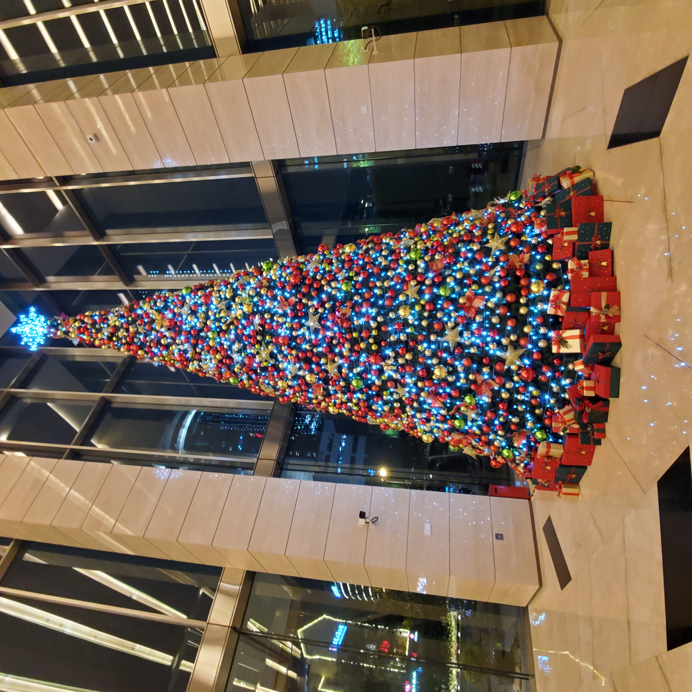
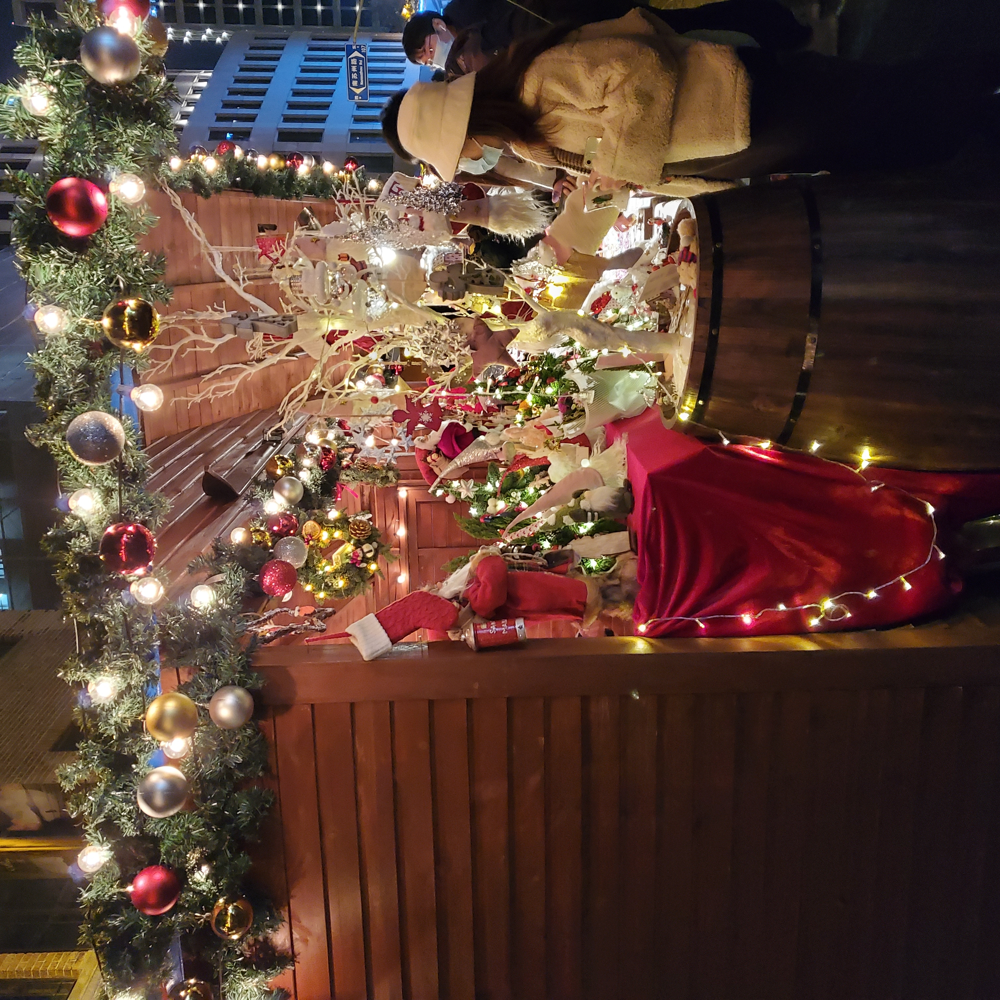
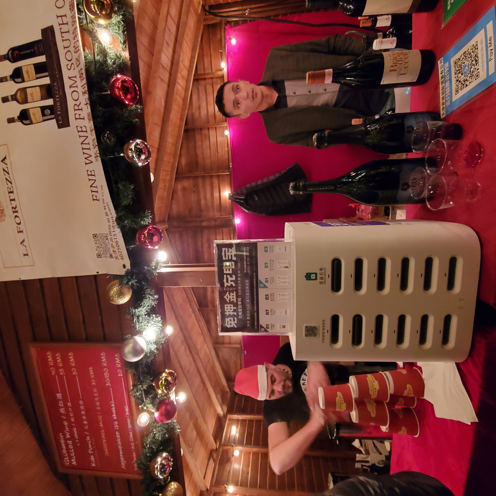
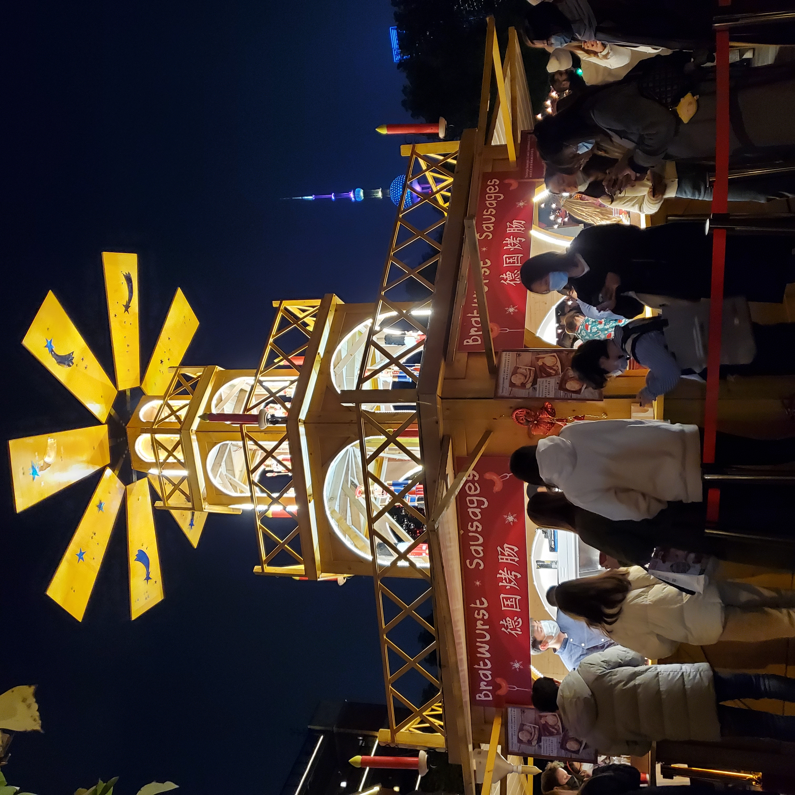
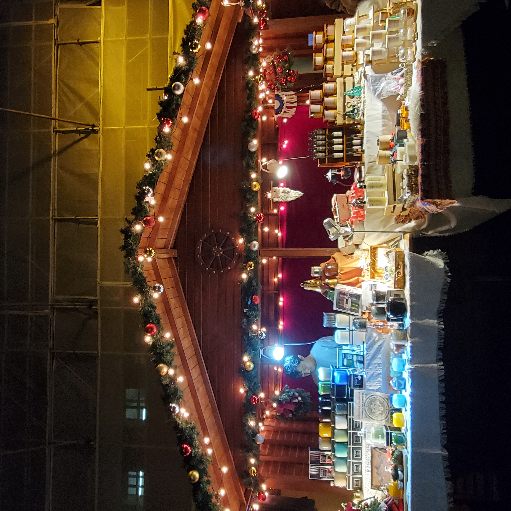
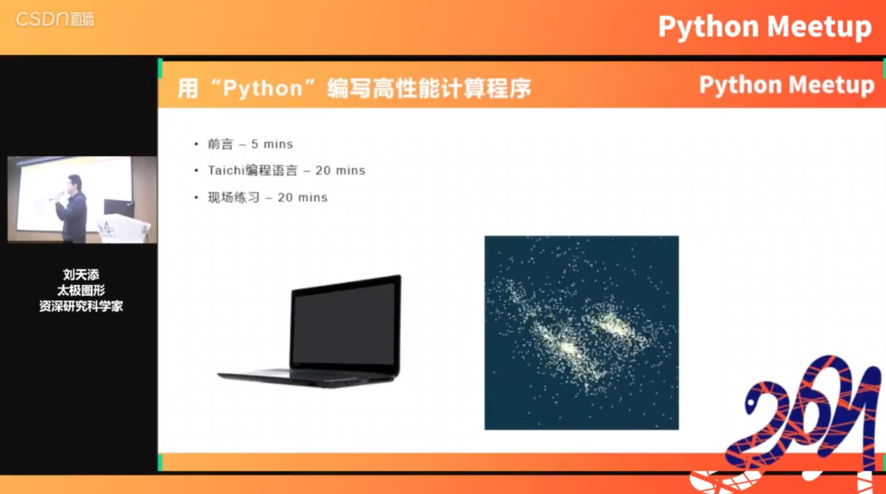
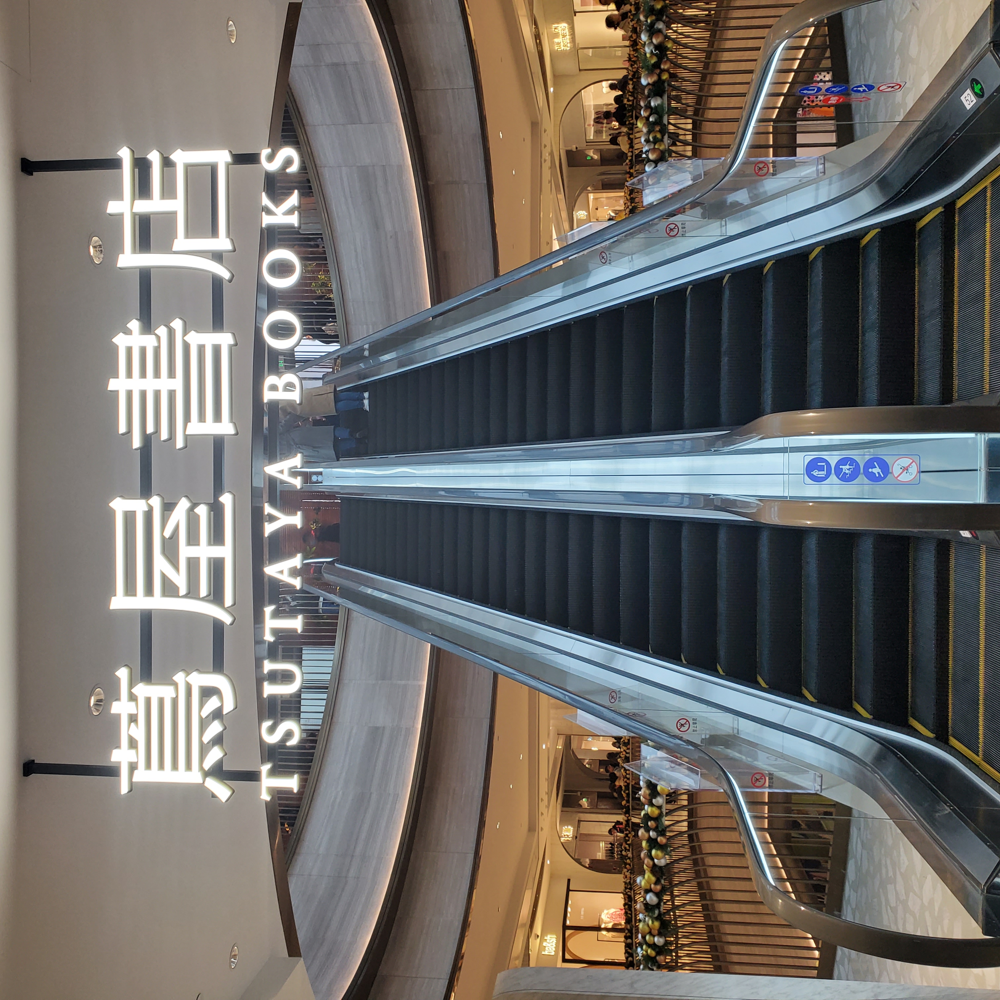
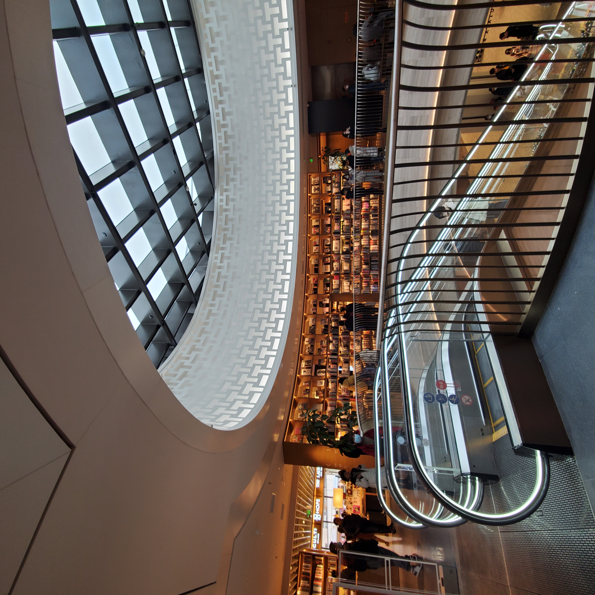
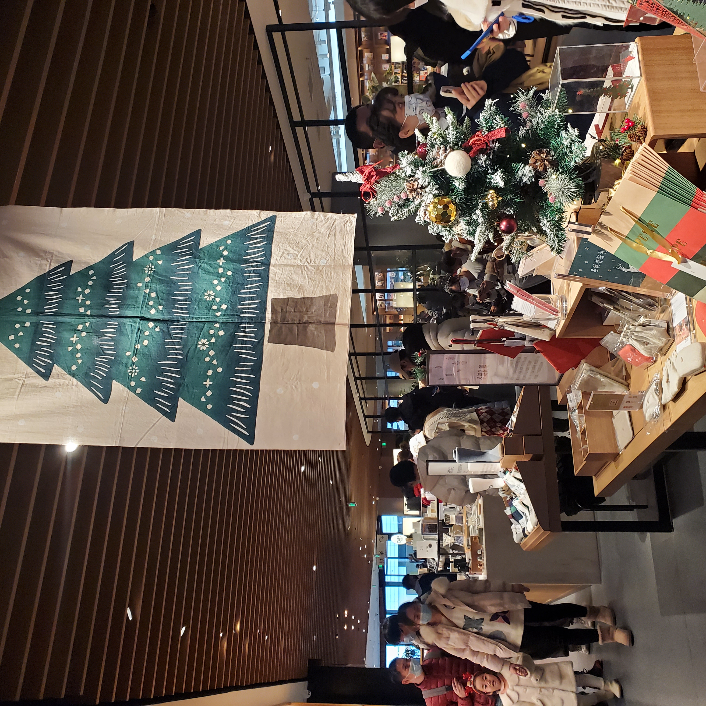
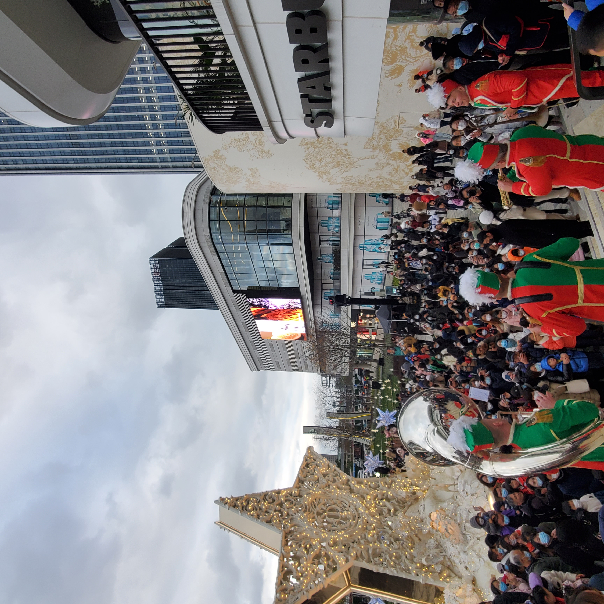

2021-12-27 圣诞节来了
目录
上海真的有圣诞气氛呀~
才12月初，各个办公楼就开始装饰圣诞树了。我们楼一楼和二楼各有一颗圣诞树，白天唱Jingle Bells， 晚上还唱不一样的歌。圣诞树装饰好的那两天，觉得太温馨了，感动地拍了两张照片。一楼的那颗圣诞树好大呀，很漂亮。当然同事上去摸了摸，发现不是真的树哈哈。在听了三个星期的jingle bells 之后，每天习以为常，总觉得圣诞节已经过去很久了。


我们也去了一次圣诞集市。上海有很多个圣诞集市，最大的是我们去的位于外滩源的集市。集市的风格和德国的很像，有漂亮的姜饼屋，也有卖果仁，热红酒和德国烤肠的摊位，更像的是有很多在寒风中站着吃东西的位置。但是这次温度有点高，没有寒风哈，所以也没有瑟瑟发抖。

本土化的圣诞市场的红酒摊上摆着好大的充电宝，收款也是二维码。虽然摆着这两样东西很突兀，但是不得不说有这两样东西就是出门在外的安全感由来啊，真的太太太方便了。（当然也希望明年能摆上有节日图案的款式哈哈）


现场真的好多年轻人啊！有一颗巨大的圣诞树，360度都有人围着它拍照。旁边有一栋类似于教堂的建筑物，很好看。现场还有旋转木马，好多姑娘童心未泯，上去坐着旋转着拍照。
 圣诞节还是在年轻人中接受度比较高呀，我们进去的时候，要排很长的队，旁边有三个大妈瞅着长队充满好奇跃跃欲试想进去，一个大妈问，里面是什么？要不要进去看看？另一个大妈回答，大概是卖东西的吧。虽然大妈无心之语把圣诞市场形容成卖东西的似乎把浪漫的那部分抹掉了，但仔细一想也没说错，不就是卖东西的嘛。最后她们也没排队，觉得没有意思，就走了。
国内这种圣诞庆祝活动真的很多哈。除了年轻人爱凑热闹过各种“洋节”之外，现在的小孩也可洋气了，一到万圣节圣诞节他们都有定制的亲子活动。小孩的父母，也绝不会让自己的小孩落后于人，很多家长也买了圣诞树在家。
我对大家过圣诞节并无异议，相反，我觉得大家能趁着这个日子聚在一起开开心心的，太好了。在国外圣诞节是一个家庭团聚的节日，和我们的春节一样。在国内圣诞节没有家庭团聚的深刻意义，为什么在国内年轻人也想要过一个这样的节日呢？我想因为年轻人真的需要一个自己的节日，用来疯狂的玩，和朋友相聚，和爱人见面，一起庆祝，而且绝对不要有家庭团聚那么严肃的感觉。我们有那么多节日，那是就没有一个这种类型的节日呀。况且，圣诞节的氛围真的很现代很浪漫，年轻人都会喜欢吧。
另外插一嘴，Peets家的外带杯图案好几个月了，都长这样。本来我看到的第一眼觉得Peets很聪明，一个图案能cover掉所有的节日，没想到是因为，现在国外由于政治正确，都不提倡说Merry Christmas了，改为说Happy Holiday，这绝对是矫枉过正呀。

圣诞节的上午刚好Pycon China组织了一个Python分享活动。我在线上听了一会，跟着太极图形的程序员刘天添老师做了一个小的练习。

做出来的结果是这样的，还不错：

圣诞节还去了一趟前滩太古里商场，里面有一个书店，叫做茑（和”鸟“的发音一样）屋书店。
书店在顶层，占地面积非常大，不仅仅是书店，也兼容了咖啡厅，餐馆，市集等功能。
 里面设计的好好哦，灯光，氛围我都很喜欢。但是没有发现有很合口味的书，里面卖的物品都是日本进口的，超级贵的，一小盒便签纸，写着人民币1000元。

 茑屋书店人有点多，加上没有找到想看的书，就出来了，打算去喝杯咖啡。突然外面聚集了很多人，广播里说有演奏，我们也凑了会热闹。
 最近还看了一本书，是刘震云的《一句顶一万句》。这本书真的相当有趣，让我着迷到什么地步呢，下班之后每天回去看到十二点，于是很快就看完了。我还尝试把里面的故事复述给楚噶。
我：”杨百顺他爹有三个儿子，其中一个叫杨百顺“。
他：逻辑清楚，但您乃废话文学代表。
我：”杨百顺他哥哥叫杨百业。“
他：”是牛百叶的那个羊百叶？“
这个故事还没讲完，我先笑了好久。
以前看这本书的时候觉得没意思，有了一定阅历之后重新看这本书觉得很好看。人生在世，能指的上的人就那么几个。指的上不是指，在缺钱的时候能向他们借钱，有事的时候能找他们办事，而是你能和他们说说心里话，他们能理解你的烦恼，哪怕出不了主意，但他们是理解你的。
这几年我真的有种感觉，就是大家越来越沉默，朋友圈发的越来越少，微博发的越来越少，很多事情觉得没意思，很多事情觉得没必要说，我很怀念以前不仅仅只展示生活好的一面的朋友呢。
但是可能这也是自然而然的事情啦，朋友分为不同种类的朋友，有的朋友能处十年二十年，有的朋友只有一年两年，但是一起相伴的时光在记忆里是美好的。
（注：觉得朋友圈微博没意思可以像我这种cyber话痨一样开个专门唠嗑的地方）
在楚噶的新入职员工纪念册上面看到一句话，”如果我觉得自己不行，那我就去走人行道，那时我就是一个行人。“希望我们都有这种觉悟，生活的困难总是不少的，但是方法总比困难多，不管怎样，我们还是能做一个行人的。
最后以大佬画的蒂亚戈作为结束，祝大家圣诞快乐。